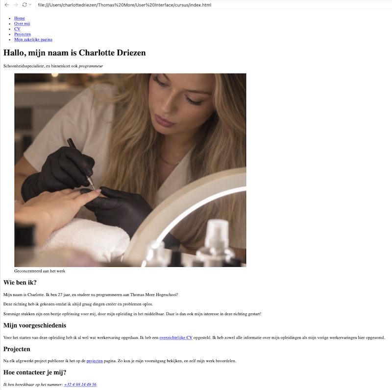
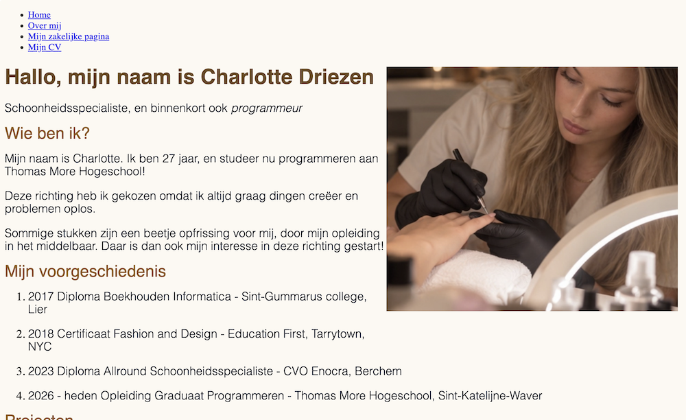
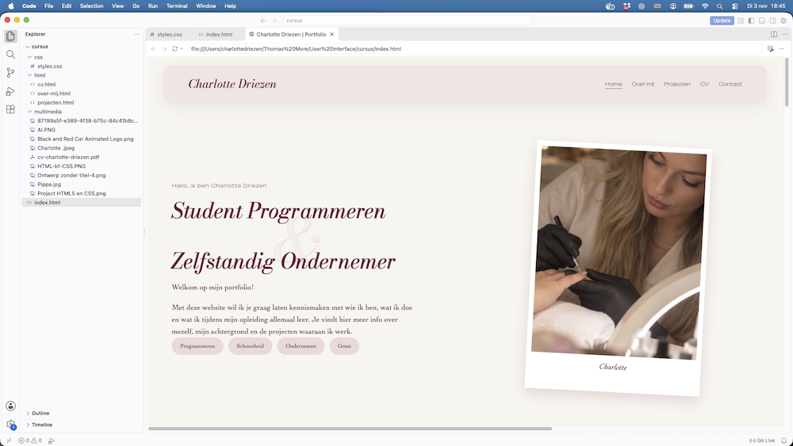
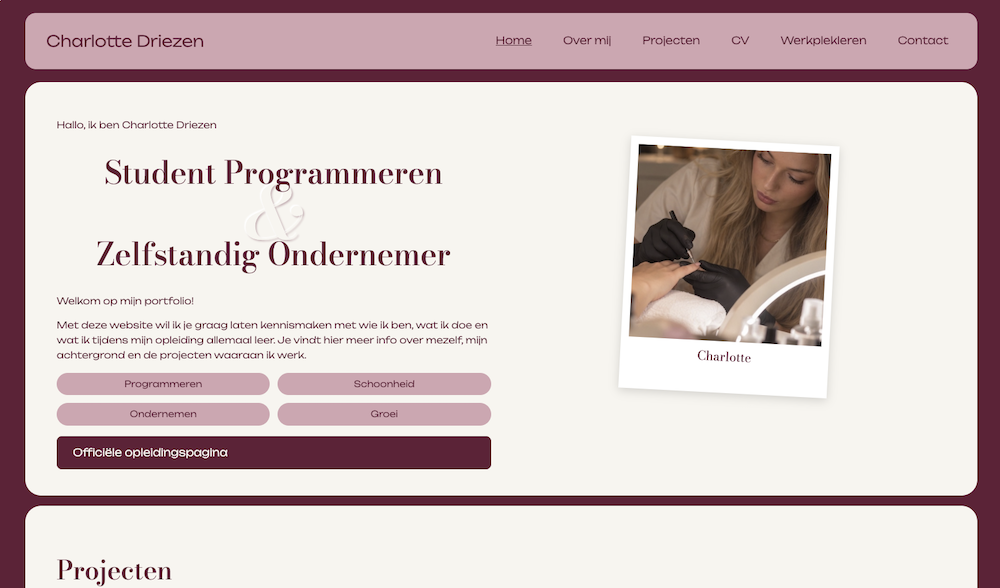

Website portfolio
Beschrijving
Mijn persoonlijke website bouwen, die later wordt gebruikt om mijn portfolio's, vaardigheden en mezelf voor te stellen.
- Vak
- User Interfaces - HTML & CSS
- Startdatum
- Gebruikte technologieën
- HTML5, CSS3
Evolutie van het project
Mijn portfolio is stap voor stap gegroeid, van een eenvoudige HTML-structuur tot de afgewerkte website in mijn eigen stijl
-
Stap 1: enkel HTML

De website voor het koppelen met CSS Bij het starten van ons portfolio, werd er gevraagd om een semantische HTML klaar te zetten voor mijn eigen persoonlijke website. De elementen header, main, footer, section, time, ... moesten gebruikt worden. Op W3Schools zocht ik extra attributen op om mijn code zo correct mogelijk te maken.Het schrijven van de teksten koste me het meeste tijd. Het formulier vond ik het moeilijkste onderdeel, en het verschil tussen de elementen was in het begin verwarrend. Hoe meer ik oefende, hoe logischer het werd.
Wat moest er zeker opstaan?
- een link naar de opleidingspagina
- Een up to date CV mét downloadbare PDF
- Een gedetailleerde projectenpagina.
- Werkpleklern al klaarzetten (nog niet voor direct)
-
De eerste CSS

Mijn eerste CSS basis Daarna voegde ik mijn eerste CSS toe en koppelde ik het stylesheet aan mijn HTML. Ik experimenteerde met een achtergrond, kleuren voor koppen en verschillende lettergroottes.
Het was nog niet mijn eigen stijl, maar ik zag voor het eerst mijn pagina veranderen door enkele regels in CSS te schrijven. Hier leerde ik hoe selectors werken en hoe je een bestand koppelt via het element link
-
Bijna klaar

De website begint vorm te krijgen. Hierna zocht ik mijn eigen stijl, gebaseerd op mijn moodboard: bordeaux, roze en crème, met de lettertypes Bodoni Moda en Unbounded. Ik gebruikte de CRAP-principes om mijn ontwerp te controleren. Hieronder zie je per principe wat ik toepaste:
Contrast:
- kleurcombinaties (bordeaux, crème, roze)
- lettertypes (Bodoni Moda en Unbounded, verschillende grotes)
- Knoppen (Duidelijke knoppen voor betere zichtbaarheid)
Repetition
- Polaroid foto's
- Lijstweergave (interesses, professionele vaardigheden)
Alignment
- Tekstblokken met bepaalde grootes
- Twee kolommen bij gebruik van foto's
Proximity
- De labels bij het formulier staan direct boven het invoervak
- Projectkaart bundelt afbeeldingen, titel, tekst en een knop in 1 blok
- Elke kop staat dichter bij de tekst dan bij de sectie erboven
-
De afgewerkte website

De website is eindelijk af! Mooi en functioneel Tot slot werkte ik de website verder af in mijn eigen stijl. Ik maakte polaroidfoto's, gebruikte afgeronde hoeken en zette kleuren als variabelen in :root, zodat ik ze maar op één plaats moet aanpassen.
Met grid en flexbox zette ik de kolommen en kaarten op hun plaats. Ik werkte ook het contactformulier af en zette mijn website als eens online via Combell. Mijn code staat op GitHub. Hieronder is een rechtstreekse link.
Wat heb ik geleerd?
Ik leerde semantische HTML schrijven, met relatieve bestandspaden werken en mijn pagina's toegankelijk opbouwen met goede kopstructuut en alt-teksten. In CSS leerde ik werken met variabelen, grid en flexbox, pseudo-elementen en het CRAP-principe om mijn ontwerp te controleren. Ik leerde ook mijn website online te zetten en mijn code bijhouden op GitHub. Het belangrijkste dat ik leerde: kleine stappen nemen en elke stap testen in de browser.